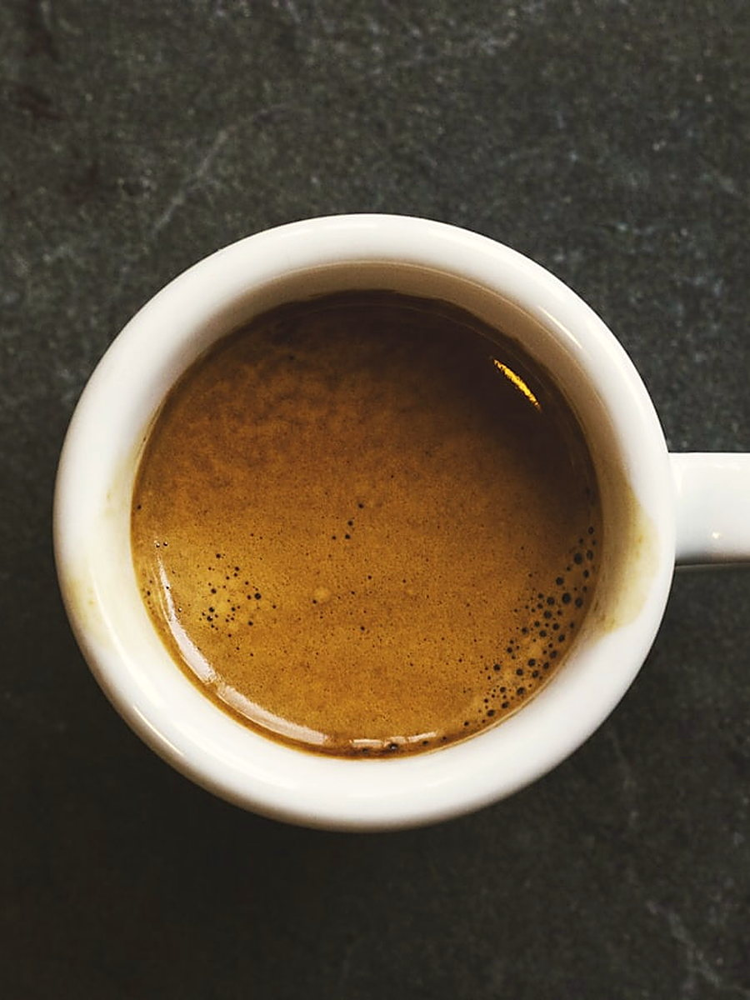
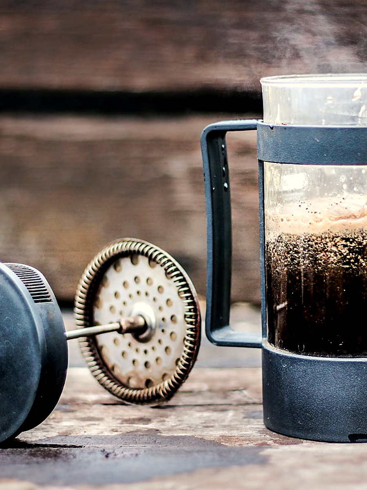
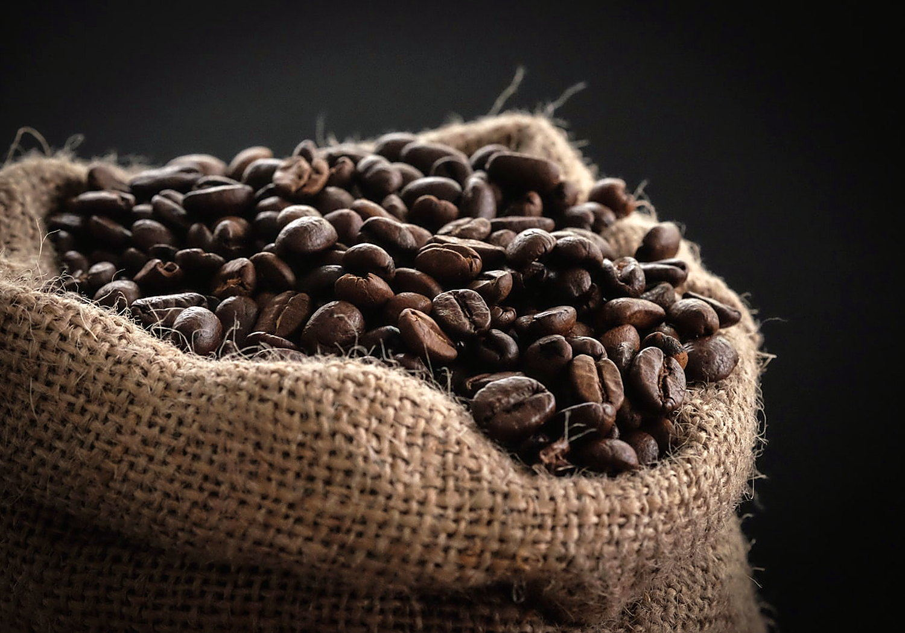
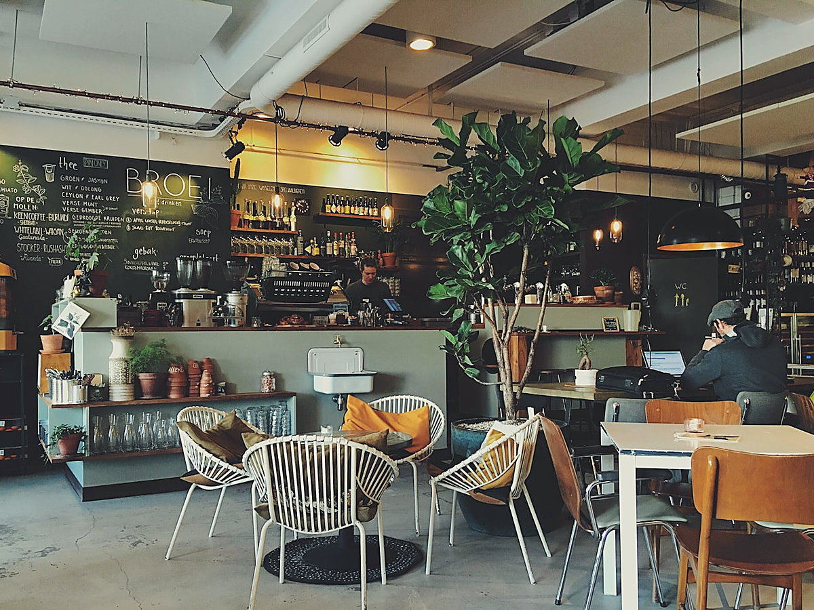
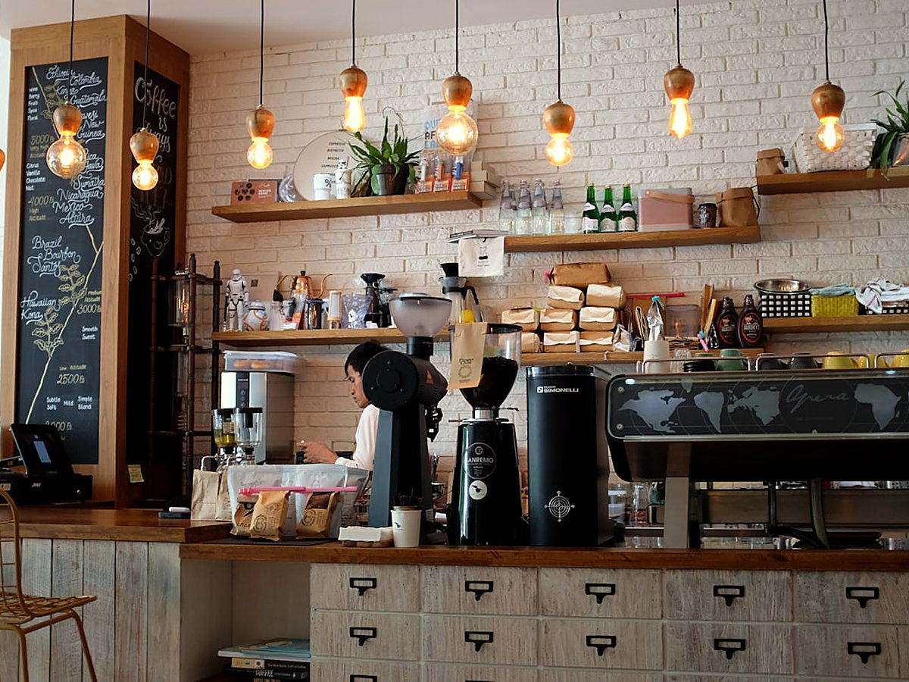
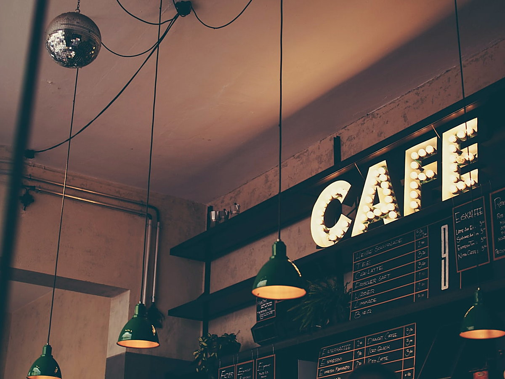

İmzaHouse Espresso
Espresso, flat white, cortado ve latte'nin temeli; içime yakın, küçük partiler hâlinde kavrulur.

Odunpazarı ❋ Eskişehir
Üç kıtadan dönüşümlü tek origin çekirdekler, küçük parti kavrum ve özenli demleme. Odunpazarı'nın taş sokaklarında bir nitelikli kahve durağı.
❋ Bardan
Çekirdek dönüşümlü; her hafta bardaki fincan değişir. Güncel çekirdek ve fiyatlar için mekânda veya Instagram'dan bilgi alabilirsiniz.

İmzaEspresso, flat white, cortado ve latte'nin temeli; içime yakın, küçük partiler hâlinde kavrulur.

DemlemeDönüşümlü tek origin çekirdek; V60, Chemex veya French press ile elle demlenir.
Uzun süre soğuk demlenir; yumuşak, ferah ve gün boyu içilebilen bir fincan.
❋ Hikâyemiz
Odunpazarı'nın taş sokaklarında, acele etmeden.
Kahveyi sadece bir içecek olarak değil, bir ritüel olarak görüyoruz.
Çekirdeklerimizi üç kıtadan, dönüşümlü ve tek origin olarak seçiyor; küçük partiler hâlinde, her çekirdeğin profiline göre kavuruyoruz. 800'den fazla tadım profili arasından, o hafta bardaki fincanı birlikte belirliyoruz.
Her demlemede öğütüm, doz ve su sıcaklığını elle ölçüyoruz. Pastanemiz her gün taze hazırlanır ve aynı gün tüketilir. Amacımız hızlı bir servis değil; oturup tadını çıkaracağınız bir mola.

❋ Mekân
Sıcak, sakin ve gün ışığı alan bir mekân. Tek başına bir kahve molası, arkadaş sohbeti ya da dizüstüyle sakin bir çalışma için. Aşağıdaki kareler temsilîdir.



❋ Ziyaret
İstiklal Mah. Sökmen Sk. No:7/B, Odunpazarı / Eskişehir
Günün çekirdeği, yeni pastaneler ve mekândan kareler için bizi Instagram'da takip edin. Görsellere tıklayınca profilimize gidersiniz.